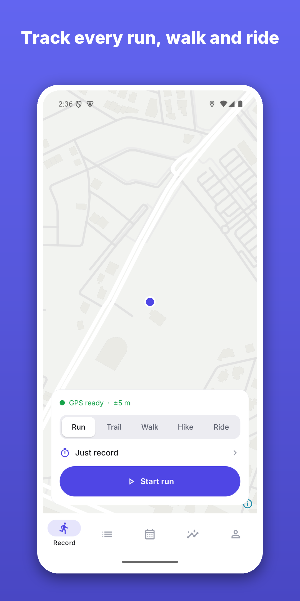
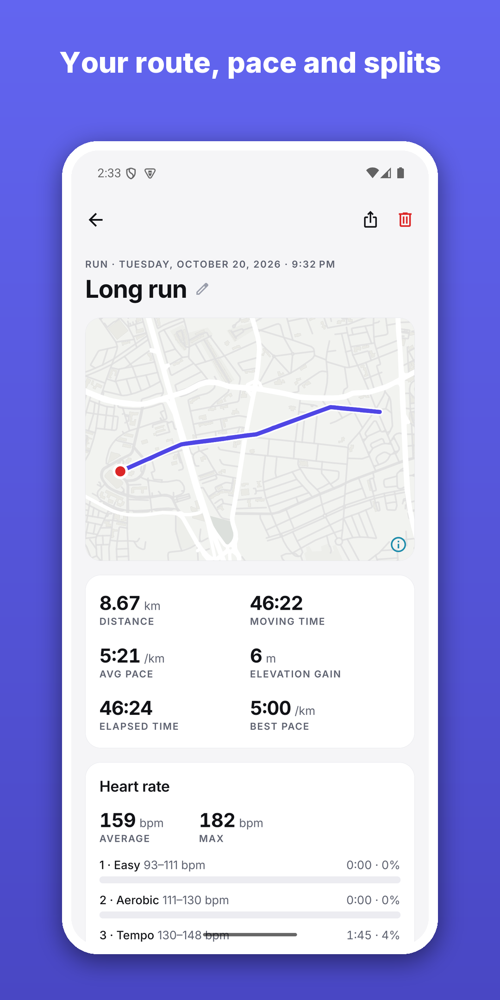
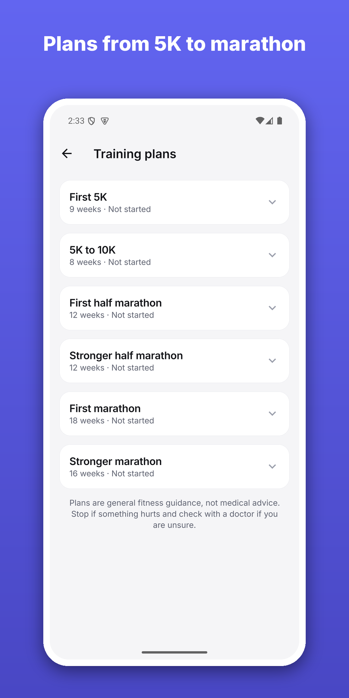
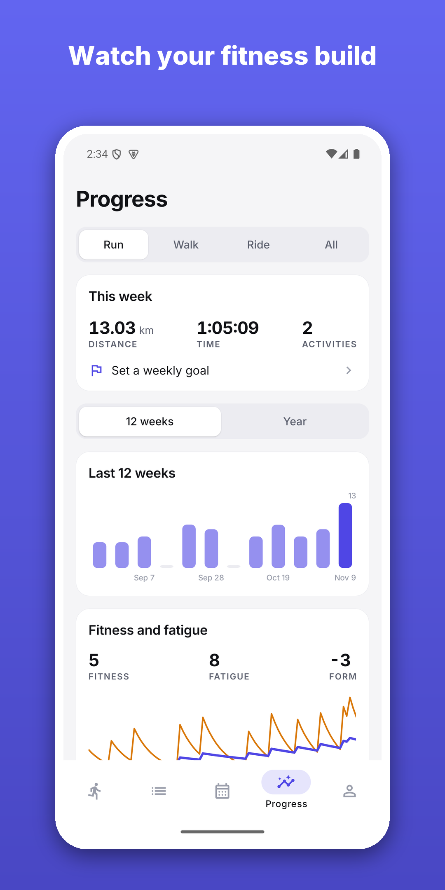
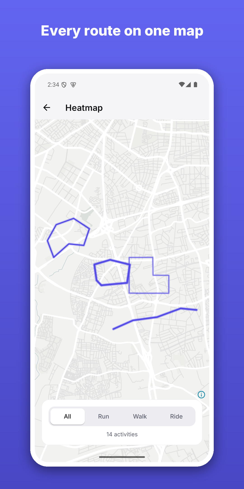
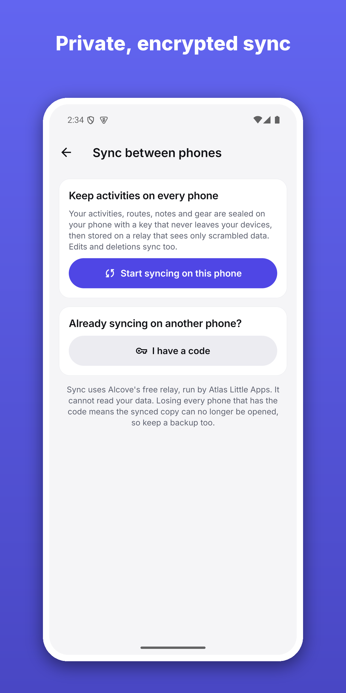

Vigor is a free GPS tracker for running, walking and cycling. Accurate routes that don’t cut out when your screen is off, real training plans, and none of your data ever leaves your phone.
Android · Free · No account · In closed testing now, launching soon
A full tracker with the tools serious runners want, built to be simple for everyone else.
Live map, pace, distance, time and elevation. Keeps recording with the screen off, with pause and resume right in the notification.
Vigor checks your battery and location settings before you start, and tells you afterwards if your phone paused GPS — and how to stop it happening again.
Run/walk, sprints, distance repeats or your own, with voice cues. Pace targets tell you to speed up or slow down when you drift.
First 5K for beginners, 5K to 10K, half marathon and marathon — session by session, counting down to your race on a calendar.
Daily steps, heart-rate zones from your watch through Health Connect, and live heart rate from a Bluetooth chest strap.
Bring your history from other apps (GPX, TCX, FIT, or a whole zip export) and export your routes with heart rate to use anywhere.

Start in one tap

Every run in detail

Follow a plan

Watch your progress

Every route on one map

Encrypted sync
Most fitness apps are built to collect you. Vigor is built the opposite way — your activities live on your phone, not on our servers.
Yes. Vigor is free to download and use, and right now every feature — including the Pro training tools — is unlocked for everyone while the app is new.
Yes. Vigor keeps recording your route with the screen off or locked, and you can pause, resume or finish from the notification. It also warns you before a run if your phone’s battery settings might interrupt GPS.
On many Android phones — Samsung, Xiaomi, OnePlus and others — aggressive battery saving can freeze a tracking app when the screen is off, leaving gaps in your route. Vigor detects this and shows you exactly how to turn it off. Here’s the full fix →
Yes. You can import GPX, TCX and FIT files, or a full zip export from another running app, with heart rate and activity names. You can also export your Vigor runs to use anywhere else.
No. Your activities and routes stay on your phone. Vigor has no account and no server of its own that stores them. Optional sync between your own phones is end-to-end encrypted, so even the relay can’t read it.
Vigor is an Android app (Android 8.0 and newer). An iPhone version isn’t available yet.
Vigor is finishing its closed test on Google Play and launching soon. Want a nudge the day it’s live?
Email me at launch